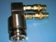
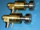
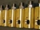
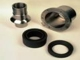

Ротационное соединение (поворотный штуцер, вертлюг, гидрошарнир) служит для подвода жидкой или газообразной среды из стационарных трубопроводов внутрь вращающегося узла (рольганга, вращающегося стола, каландра и пр.)
Ротационные соединения находят свое применение в самых различных отраслях промышленности, где существует потребность в прохождении или подаче жидкости (вода, масло, СОЖ и пр.) или газа (пара) во вращающиеся узлы оборудования. Мы готовы предложить высококачественные ротационные соединения из Европы, которые обеспечат наилучшее решение для любого случая.
Мы поставляем аналоги изделий таких фирм, как Deublin, Johnson, Maier и пр.
|  | Ротационные соединения серии UOPD | Подробнее.. |
|---|---|---|
|  | Ротационные соединения серии UOPB | Подробнее.. |
|  | Ротационные соединения серии UOPM | Подробнее.. |
|  | Паровые головки OP | Подробнее.. |